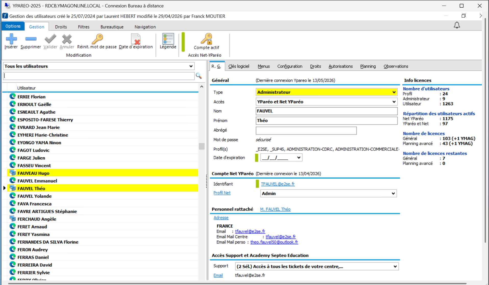
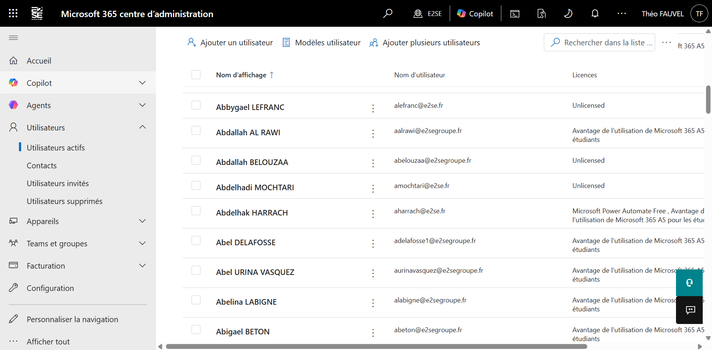

L'arrivée d'un nouveau collaborateur à l'E2SE nécessite une procédure d'intégration informatique complète et rigoureuse. Je suis en charge de tout le volet IT de l'onboarding : de la préparation du matériel jusqu'au rendez-vous physique avec le collaborateur pour la remise et la prise en main des outils numériques de l'école.

